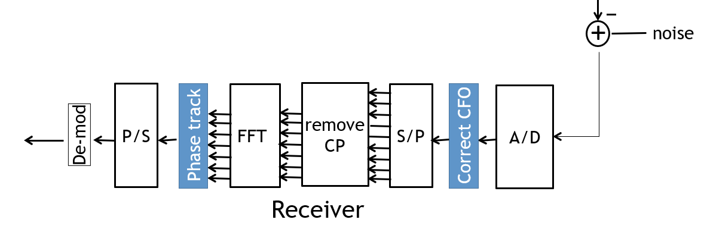
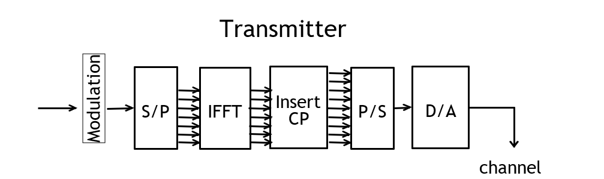
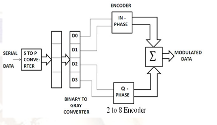
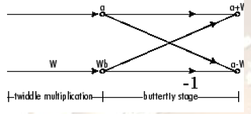
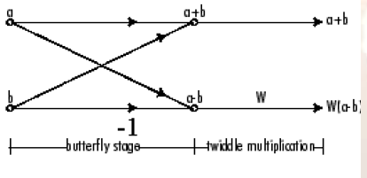

Dr. D.Y Patil Institiute Of Technology ,Pimpri(411018)
Component's Description
> > > > Click on a component to see it's details.
RECIEVER:
The receiver picks up the signal r(t), which is then quadrature-mixed down to baseband using cosine and sine waves at the carrier frequency. This also creates signals centered on 2f_{c}, so low-pass filters are used to reject these. The baseband signals are then sampled and digitised using analog-to-digital converters (ADCs), and a forward FFT is used to convert back to the frequency domain. This returns N parallel streams, each of which is converted to a binary stream using an appropriate symbol detector. These streams are then re-combined into a serial stream, [n], which is an estimate of the original binary stream at the transmitter.

A fast Fourier transform (FFT) is an algorithm that computes the discrete Fourier transform (DFT) of a sequence, or its inverse (IDFT). Fourier analysis converts a signal from its original domain (often time or space) to a representation in the frequency domain and vice versa. The DFT is obtained by decomposing a sequence of values into components of different frequencies. This operation is useful in many fields, but computing it directly from the definition is often too slow to be practical. An FFT rapidly computes such transformations by factorizing the DFT matrix into a product of sparse (mostly zero) factors.As a result, it manages to reduce the complexity of computing the DFT from O(N2), which arises if one simply applies the definition of DFT, to O(N\log N), where N is the data size. The difference in speed can be enormous, especially for long data sets where N may be in the thousands or millions. In the presence of round-off error, many FFT algorithms are much more accurate than evaluating the DFT definition directly or indirectly. There are many different FFT algorithms based on a wide range of published theories, from simple complex-number arithmetic to group theory and number theory.
FFT
TRANSMITTER
-

According to given in Figure, we have to implement the OFDM block by block and finally interconnect all of them together to form complete OFDM circuit.
QAM Modulation:
Presented system uses QAM modulation so 16 constellation points are used. To have different constellation values data is divided in groups of 4 bits each and convert that binary code to gray code for better accuracy. Upper two bits are used for imaginary number and lower two bits are used to denote real number
Inverse Fast Fourier Transform (IFFT)
Initially carrier bank generating a set of subcarriers was necessary for OFDM in conventional or analogue approach. Each subcarrier was modulated with a constellation decided by bit combination, but this approach made system bulky and costlier. So to make system digital, simple, cheap, and efficient IFFT is being used. A stepwise implementation of butterfly diagram is done in this algorithm. Radix-2 Decimation-in-time (DIF) IFFT is implemented in this algorithm. Different procedures and operations are done to achieve this. In above figure the basic butterfly unit for the radix-2 IFFT algorithm is shown.

Decimation-In-Time IFFT
Decimation-In-Frequency IFFT